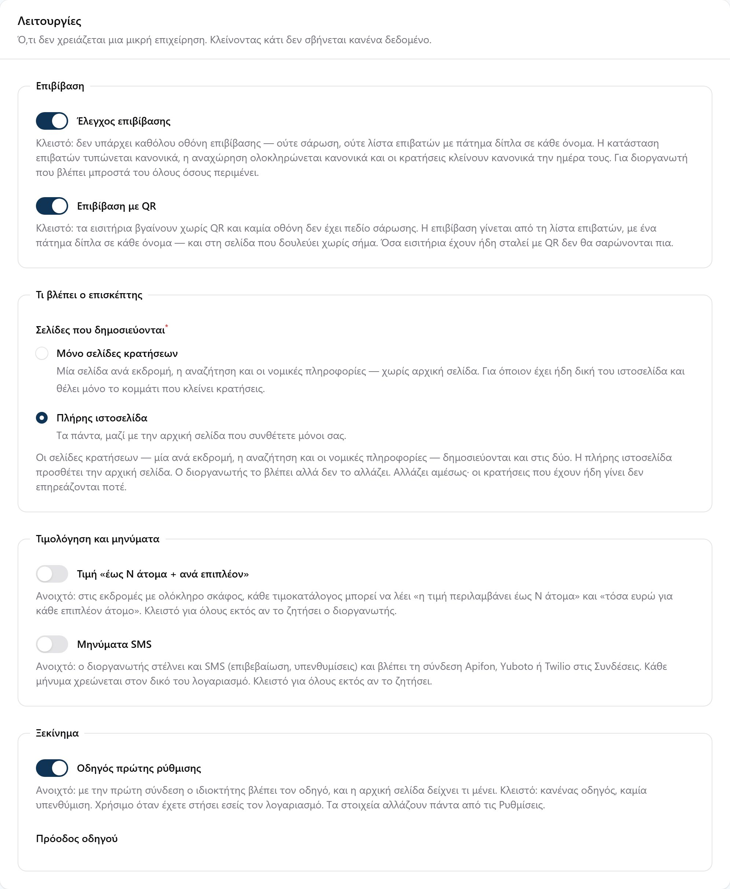
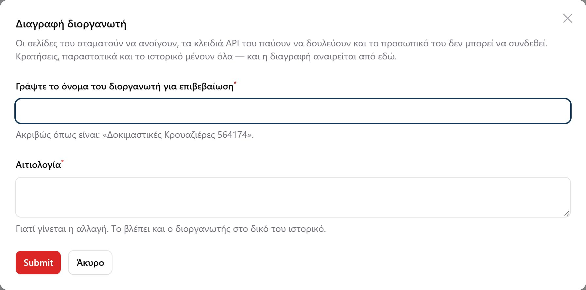
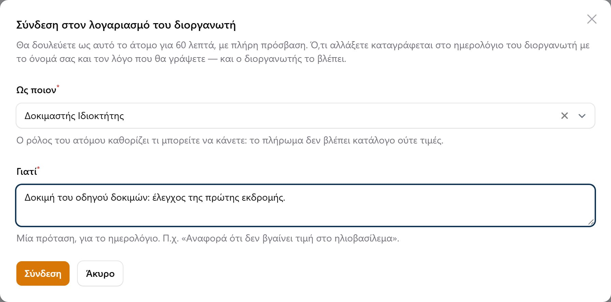
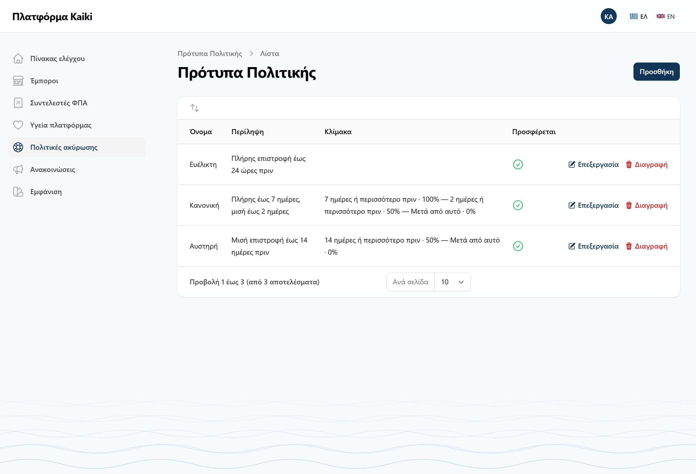
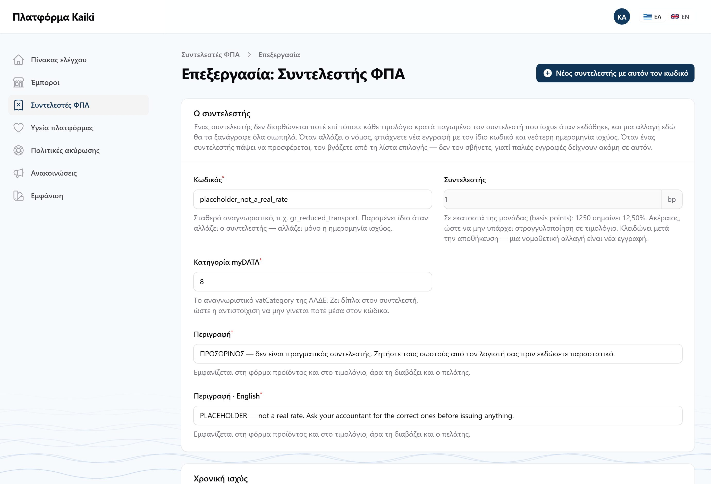

admin@kaiki.example και password.
Από εδώ και κάτω δεν κοιτάμε τα έτοιμα δεδομένα. Στήνουμε δική μας επιχείρηση από το μηδέν — που είναι ακριβώς αυτό που θα δει ο πρώτος πραγματικός πελάτης.
Ο διοργανωτής δεν εγγράφεται μόνος του. Τον ανοίγει η πλατφόρμα και στέλνει πρόσκληση στον ιδιοκτήτη.
admin@kaiki.example και password.

Στο μενού Έμποροι, πατήστε Νέος διοργανωτής. Η φόρμα ζητάει πια όλα όσα αποφασίζει η πλατφόρμα — λειτουργίες, σελίδες, κανάλια πώλησης — από την πρώτη στιγμή, και όχι σε δεύτερη επίσκεψη.

| Πεδίο | Τι βάζουμε |
|---|---|
| Επωνυμία | Το όνομα της δοκιμαστικής επιχείρησης, π.χ. «Δοκιμαστικές Κρουαζιέρες» |
| Διεύθυνση | Συμπληρώνεται μόνη της. Είναι το slug της σελίδας — μικρά λατινικά και παύλες |
| Email επιχείρησης | Δεν είναι λογαριασμός εισόδου. Εκεί πάει η απάντηση όταν ένας πελάτης πατά «Απάντηση» σε email της επιχείρησης |
| Ονοματεπώνυμο | Του ιδιοκτήτη — ποιος θα διοικεί |
| Email εισόδου | Αυτό γίνεται ο λογαριασμός εισόδου. Πρέπει να είναι μοναδικό |
| Πακέτο, Γλώσσα, Κλάδος | Αφήστε τα όπως είναι: Δοκιμαστικό, Ελληνικά, Σκάφη |

Στη φόρμα δημιουργίας ξεκινά κλειστός. Μόλις τον ανοίξετε εμφανίζεται από κάτω το «Επιβίβαση με QR» — ανοίξτε το κι αυτό. Θα τα χρειαστείτε στο μέρος Ζ.
Κι αυτός ξεκινά κλειστός. Χωρίς αυτόν ο ιδιοκτήτης μπαίνει κατευθείαν στον πίνακα και το μέρος Δ δεν γίνεται.
Πλήρης ιστοσελίδα στις σελίδες που δημοσιεύονται· κλειστά το «έως Ν άτομα», τα SMS και το GetYourGuide. Πατήστε Αποθήκευση.
Ένας διοργανωτής που φτιάχνεται με άλλον τρόπο τα παίρνει ανοιχτά. Στη φόρμα δημιουργίας όμως ξεκινούν κλειστά, και αν πατήσετε «Αποθήκευση» χωρίς να κοιτάξετε, ο διοργανωτής φτιάχνεται χωρίς επιβίβαση και χωρίς οδηγό. Αν σας συμβεί, διορθώστε το από την «Επεξεργασία», καρτέλα «Λειτουργίες» — και αναφέρετέ το.
Ο λογαριασμός φτιάχνεται με έναν τυχαίο κωδικό που δεν βλέπει ποτέ κανείς, και ο ιδιοκτήτης ορίζει δικό του μέσα από σύνδεσμο. Ένας διαχειριστής που θα πληκτρολογούσε κωδικό θα έβαζε ένα λειτουργικό διαπιστευτήριο ξένης επιχείρησης σε ένα email και σε ένα τετράδιο.

Ανοίξτε τον καινούργιο από τη λίστα (Επεξεργασία). Η οθόνη έχει τρεις καρτέλες: Συνδρομή, Λειτουργίες, Κανάλια πώλησης.

Ρωτήστε τον διοργανωτή αν κάνει καθόλου έλεγχο επιβίβασης. Πολλοί με ένα σκάφος δεν κάνουν: ξέρουν ποιοι έρχονται και τους βλέπουν μπροστά τους. Τότε κλείνετε τον Έλεγχο επιβίβασης, και φεύγουν και οι δύο οθόνες επιβίβασης μαζί με το QR από τα εισιτήρια. Αν κάνει έλεγχο αλλά δεν σαρώνει, κλείνετε μόνο το «Επιβίβαση με QR». Κάθε αποθήκευση σε αυτή την οθόνη ζητά αιτιολογία, και τη βλέπει ο ίδιος ο διοργανωτής στο ιστορικό του.
/app του διοργανωτή, στις
Ρυθμίσεις → Ιστορικό ενεργειών. Επαναφέρετέ τον όπως ήταν.

Πατήστε Διαγραφή διοργανωτή, διαβάστε το παράθυρο, και δοκιμάστε να το υποβάλετε με λάθος όνομα: πρέπει να αρνηθεί. Μετά πατήστε Άκυρο. Μη διαγράψετε τον διοργανωτή των δοκιμών — τον χρειάζεστε μέχρι το τέλος. Το κουμπί υποβολής γράφει ακόμη «Submit» στα αγγλικά· είναι ήδη γνωστό.
Όταν ένας διοργανωτής λέει «δεν μου βγαίνει η τιμή», η πλατφόρμα μπορεί να μπει στον λογαριασμό του και να το δει όπως το βλέπει εκείνος.

Στη γραμμή του δικού σας διοργανωτή. Διαλέξτε τον ιδιοκτήτη και γράψτε μία πρόταση στο «Γιατί». Πατήστε Σύνδεση.
Τον πίνακα του διοργανωτή, με μια μπάρα πάνω από κάθε σελίδα: «Είστε συνδεδεμένοι ως …», ποιος είστε πραγματικά, και πόσα λεπτά απομένουν. Στη μπάρα υπάρχει Έξοδος, που σας επιστρέφει στην πλατφόρμα.
Στο Ιστορικό ενεργειών του διοργανωτή, μια γραμμή «Είσοδος διαχειριστή στον λογαριασμό» με το όνομά σας και τον λόγο.
Όταν γράφτηκε αυτός ο οδηγός, το «Σύνδεση» κατέγραφε τη γραμμή στο ιστορικό,
αλλά μετά έβγαζε τη σελίδα εισόδου του /app αντί για τον πίνακα με
τη μπάρα — γι' αυτό δεν υπάρχει εικόνα της μπάρας εδώ. Αν σας συμβεί ακόμη,
αναφέρετέ το με τη διεύθυνση που βλέπετε.
Στο αριστερό μενού του /admin, εκτός από τους Εμπόρους:

Ανοίξτε ένα πρότυπο και αλλάξτε ένα ποσοστό. Στο μέρος Δ, ο οδηγός πρέπει να δείχνει το καινούργιο ποσοστό. Μια πολιτική που έχει ήδη φτιάξει ένας διοργανωτής από πρότυπο δεν αλλάζει — είναι δικό του αντίγραφο.

Πατήστε Νέος συντελεστής με αυτόν τον κωδικό: ανοίγει νέα εγγραφή με
τον κωδικό και την περιγραφή συμπληρωμένα, και τον συντελεστή και την ημερομηνία
κενά επίτηδες. Ο συντελεστής της δοκιμαστικής βάσης λέγεται
placeholder_not_a_real_rate και δεν είναι πραγματικός.


Ανοίξτε http://192.168.1.43:8025 — το Mailpit, όπου πέφτει κάθε email
του Kaiki στις δοκιμές. Εκεί είναι η πρόσκληση.
Κοιτάξτε τον αποστολέα: γράφει το όνομα του διοργανωτή, με τη διεύθυνση της πλατφόρμας δίπλα. Έτσι φεύγουν πια όλα τα email: από τη διεύθυνση του Kaiki, με το όνομα της επιχείρησης, και με «Απάντηση προς» (Reply-To) τη διεύθυνση της επιχείρησης.
Αν βιάζεστε ή αν το email δεν έφτασε, υπάρχει εντολή που τυπώνει τον σύνδεσμο κατευθείαν. Από τον φάκελο kaiki, σε ένα PowerShell:
php artisan kaiki:invitation-link owner@example.com
Δοκιμαστής Ιδιοκτήτης — owner@example.com http://192.168.1.43:8000/app/password-reset/reset?token=...&email=...
Τότε το APP_URL δεν άλλαξε στο μέρος Α, βήμα 4. Ο σύνδεσμος θα
ανοίγει μόνο στο μηχάνημα που τον έφτιαξε και σε κανέναν άλλο. Διορθώστε το
.env, τρέξτε php artisan config:clear, και ζητήστε νέον
σύνδεσμο με την εντολή παραπάνω.